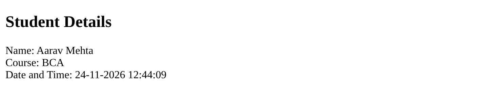

Write a PHP code to print your name, course, and current date & time.
Program 2.1: Printing Name, Course and Current Date and Time
Concepts used
PHP tags, echo, string values, the concatenation operator (.), the built-in functions date_default_timezone_set() and date().
Test data: Name: Aarav Mehta; Course: BCA. The date and time are taken from the server clock when the page is opened.
Logic
- Set the time zone to Indian Standard Time.
- Print a heading.
- Print the name and the course.
- Obtain the current date and time with
date()and print them after a label.
Code
<?php// Set the time zone so that date() returns Indian Standard Timedate_default_timezone_set("Asia/Kolkata");?><!DOCTYPE html><html lang="en"><head> <meta charset="UTF-8"> <title>Student Details</title></head><body> <?php echo "<h2>Student Details</h2>"; echo "Name: Aarav Mehta<br>"; echo "Course: BCA<br>"; echo "Date and Time: " . date("d-m-Y H:i:s"); ?></body></html>
Output
These are real screenshots, taken by running the program with the test data.

Understanding the output
The name and course are printed exactly as written in the strings. The last line is a sample: the date and time are produced by date() when the page is opened, so a different value appears each time the page is reloaded. Reloading the page a few seconds later changes the seconds, which shows that the page is generated afresh for every request.
How it works
The first PHP block contains a comment, explained in Section 2.5, and a call to date_default_timezone_set(). This block produces no output; it only prepares the time zone for the rest of the script. The HTML document then begins.
The second PHP block contains four echo statements. The first writes the heading, and the next two write the name and the course; the <br> tag at the end of each string moves the next item to a new line in the browser. In the last statement, date("d-m-Y H:i:s") returns the current date and time in the form day-month-year hours:minutes:seconds, and the dot operator . joins this value to the label "Date and Time: ". The dot operator is explained further in Section 2.5.5.
Run it yourself
Real PHP 8.3 runs inside your browser (nothing is sent to a server). Forms, links, cookies and sessions work as they do in XAMPP. The first run downloads PHP, so it needs internet and takes a few seconds.
Try this:
- Change the name and course to your own.
- Change the format to
date("l, d F Y, h:i A")to show the day name and a 12-hour time.
Running it in XAMPP
Save the file as C:\xampp\htdocs\phpbook\ch02\details.php, start Apache, and open http://localhost/phpbook/ch02/details.php.
Common mistakes
- Writing the format characters in the wrong case, for example M instead of m, which prints the month as a short name such as Oct instead of 10.
- Omitting the time-zone setting, which may print a time several hours different from Indian time.
- Forgetting the dot operator between the label and
date(), which produces a parse error. - Writing
<br>outside the quotation marks, where PHP treats it as invalid code.